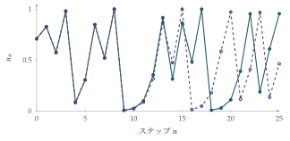

STEP I 2014、第6問
先に進む前に問題を読んでおこう。問題は STEP Support Programme の問題データベースにある： step.maths.org/questions/14-s1-q6
導入
規則 \(u_{n+1} = ku_n(1 - u_n)\) はロジスティック写像（logistic map）とよばれ、資源が限られた環境における個体数の最も単純なモデルである。\(u_n\) は \(n\) 年目の個体数を環境が支えうる最大数に対する割合で表したもの、\(k\) は増殖率であり、因子 \(1 - u_n\) は過密の効果を表す。1976年、生物学者ロバート・メイ（Robert May）は『Nature』誌に「Simple mathematical models with very complicated dynamics」（非常に複雑な振る舞いをする単純な数学モデル）という短い論文を発表した。メイは、\(k\) を \(4\) に向けて大きくしていくと、このたった1行の規則が、一定の値に落ち着く状態から、振動する状態を経て、まったくでたらめに見える振る舞いへと移り変わることを示した。これはカオス（chaos）の原点となる例の一つとなった。
カオス的な系は、ふつう解くことができない。\(u_n\) を与える公式は存在せず、\(u_{100}\) を求めるにはそれより前の項をすべて計算するしかない。この問題はその例外を見つけるものである。最もカオス的な値である \(k = 4\) では、公式が存在するのである。しかもその公式は、なぜこの数列が予測不能なのかを正確に説明してくれる。
取りかかる前に
\(s = \sin^2\theta\) として、式 \(4s(1 - s)\) をどこかで見たことはないだろうか。\(\sin^2\theta\)、\(\cos^2\theta\)、\(\sin 2\theta\) を結びつける恒等式は何か。
\(s = \sin^2\theta\) ならば \(1 - s = \cos^2\theta\) であるから、\(4s(1 - s) = 4\sin^2\theta\cos^2\theta = (2\sin\theta\cos\theta)^2 = \sin^2 2\theta\) となる。写像 \(s \mapsto 4s(1 - s)\) は、2倍角の公式（double-angle formula）が姿を変えたものなのである。
順を追って解く
段階 1 規則性を予想する
\(u_0 = \sin^2\theta\) とすると、上の恒等式から \[u_1 = 4\sin^2\theta\cos^2\theta = \sin^2 2\theta, \qquad u_2 = 4\sin^2 2\theta\cos^2 2\theta = \sin^2 4\theta.\]
各ステップで角はどうなっているか。\(u_n\) についてどのような予想が立つか。
角は毎回2倍になっているので、\(u_n = \sin^2(2^n\theta)\) と予想できる。
段階 2 証明する
ある項から次の項を定める規則で定義された数列について、そのすべての項に関する主張を示すには、どの証明法が適しているか。
数学的帰納法（induction）である。\(u_0 = \sin^2\theta = \sin^2(2^0\theta)\) であるから、\(n = 0\) のとき主張は成り立つ。ある \(n\) について \(u_n = \sin^2(2^n\theta)\) が成り立つと仮定すると、 \[u_{n+1} = 4\sin^2(2^n\theta)\bigl(1 - \sin^2(2^n\theta)\bigr) = \bigl(2\sin(2^n\theta)\cos(2^n\theta)\bigr)^2 = \sin^2(2^{n+1}\theta),\] となり、これは \(n + 1\) のときの主張である。よって、すべての \(n \geq 0\) について \(u_n = \sin^2(2^n\theta)\) が成り立つ。■
\([0, 1]\) に属するどの初期値 \(u\) も \(\sin^2\theta\) の形に書ける（\(\theta = \arcsin\sqrt u\) とすればよい）ことに注意しよう。したがって、これで \(k = 4\) のロジスティック写像が、\([0, 1]\) のあらゆる初期値について解けたことになる。
段階 3 変数を変換する
\(v_n = \alpha u_n + \beta\) を \(v_{n+1}\) の規則に代入せよ。その結果が \(u_{n+1} = 4u_n - 4u_n^2\) となる必要がある。条件はいくつ得られ、未知数はいくつあるか。
代入すると \[\alpha u_{n+1} + \beta = -p(\alpha u_n + \beta)^2 + q(\alpha u_n + \beta) + r,\] であるから \[u_{n+1} = -p\alpha\, u_n^2 + (q - 2p\beta)\, u_n + \frac{-p\beta^2 + q\beta + r - \beta}{\alpha}.\] これが \(4u_n - 4u_n^2\) となるためには、次の3つが必要である。 \[p\alpha = 4, \qquad q - 2p\beta = 4, \qquad -p\beta^2 + (q - 1)\beta + r = 0.\] 最初の2つから \(\alpha = 4/p\)、\(\beta = (q - 4)/(2p)\) と定まる。未知数はもう残っていないので、3つ目の式は \(p\)、\(q\)、\(r\) に対する本当の意味での条件となる。\(\beta\) を代入して \(4p\) を掛けると \[-(q - 4)^2 + 2(q - 1)(q - 4) + 4pr = 0,\] となり、展開すると \(-(q^2 - 8q + 16) + (2q^2 - 10q + 8) + 4pr = 0\)、すなわち \(q^2 - 2q - 8 + 4pr = 0\)、つまり \[4pr = 8 + 2q - q^2. \qed\]
方程式は3つあるのに未知数は2つしかない。条件が現れるのはこのためである。計算する前に、一般の2次写像がいつも \((*)\) と同値になるとは限らない理由がわかるだろうか。（1次の変数変換で変えられるものと変えられないものを考えてみよ。）
段階 4 具体例
\(v_{n+1} = -v_n^2 + 2v_n + 2\) では \(p = 1\)、\(q = 2\)、\(r = 2\) であり、\(4pr = 8 = 8 + 4 - 4\) であるから条件は成り立つ。このとき \(\alpha = 4\)、\(\beta = -1\) であるから \(v_n = 4u_n - 1\) であり、\(u_n\) は \((*)\) を満たす。\(v_0 = 1\) より \(u_0 = \frac12 = \sin^2\frac{\pi}{4}\) であるから \[u_n = \sin^2\!\Bigl(\frac{2^n\pi}{4}\Bigr), \qquad v_n = 4\sin^2\!\Bigl(\frac{2^n\pi}{4}\Bigr) - 1 = 1 - 2\cos\Bigl(\frac{2^n\pi}{2}\Bigr).\] これより \(v_0 = 1\)、\(v_1 = 3\) であり、すべての \(n \geq 2\) について \(v_n = -1\) となる。（直接確かめると、\(-1 + 2 + 2 = 3\)、次に \(-9 + 6 + 2 = -1\)、さらに \(-1 - 2 + 2 = -1\) である。）■
この特別な初期値は、角が \(\pi\) の倍数に行き着いて数列が止まるように選ばれている。そのせいで面白い部分が隠れてしまっているが、それを次に見ていこう。
振り返り
変装を見抜く。写像 \(s \mapsto 4s(1 - s)\) は、\(s = \sin^2\theta\) と書いたとたんに角の2倍化になった。
予想し、帰納法で証明する。2つの項から規則性が見え、帰納法でそれを証明した。
方程式と未知数の個数を数える。1次の置き換えには自由なパラメータが2つあり、2次式には係数が3つある。したがって条件が1つ余るはずである。
背後にある数学
数列が予測不能である理由
公式 \(u_n = \sin^2(2^n\theta)\) を得たことで、話は終わったように見える。どの項も直接計算できるからである。しかし、この公式が何を言っているかをよく見てみよう。\(\sin^2\) は周期 \(\pi\) をもつので、意味をもつのは \(2^n\theta\) を \(\pi\) を法（modulo）として見た値だけである。\(0 \leq x < 1\) として \(\theta = \pi x\) と書き、\(x\) を2進法（binary）で表す。 \[x = 0.b_1 b_2 b_3 \ldots \quad(\text{基数 } 2).\] \(2\) を掛けると小数点が1桁右にずれ、その結果を \(1\) を法として見ると、小数点を越えた桁が捨てられる。したがって \(u_n\) は、\(x\) の2進表記の \(b_{n+1}\) 以降の桁だけで決まる。ロジスティック写像は1ステップごとに初期値の桁を1つ新たに読み込み、先頭の桁を1つ捨てていくのである。
これが初期値鋭敏性（sensitive dependence on initial conditions）であり、カオスを特徴づける性質である。2進法で \(20\) 桁（10進法でおよそ6桁）まで一致する2つの初期値からは、たいてい、およそ \(20\) ステップまでは一致し、その後はまったく無関係になる数列が生じる（図 8.7.1）。\(u_{100}\) を予測するには、\(u_0\) を2進法で \(100\) 桁まで知る必要がある。初期の角の誤差は、どれほど小さくても、ステップごとに2倍になる。（個体数 \(u\) そのものの誤差が毎回まったく同じ倍率で増えるわけではない。写像は \([0, 1]\) のある部分を他の部分より強く引き伸ばすからである。しかし平均すれば同じ割合で増大する。）公式はこの状況を救ってはくれない。単にその仕組みを目に見えるようにするだけである。

いたるところにある周期点
この公式からは、写像のすべての周期軌道（cycle）も求められる。数列が \(N\) ステップ後に初期値に戻るのは、ちょうど \(\sin^2(2^N\theta) = \sin^2\theta\)、すなわち \(2^N\theta \equiv \pm\theta \pmod{\pi}\) のときである。したがって \(\theta = m\pi/(2^N - 1)\) または \(\theta = m\pi/(2^N + 1)\) は、周期が \(N\) の約数となる点を与える。たとえば \(\theta = \pi/5\) は \(4\theta \equiv -\theta\) を満たすので、\(\sin^2\frac{\pi}{5} \to \sin^2\frac{2\pi}{5} \to \sin^2\frac{4\pi}{5} = \sin^2\frac{\pi}{5}\) は周期 \(2\) の軌道である。あらゆる周期の周期点（periodic point）が存在し、しかもそれらは \([0, 1]\) において稠密（dense）である。つまり、どれほど小さな区間の中にも、数列が繰り返しになる初期値が存在する。それにもかかわらず、誤差は2倍になっていくので、どの周期点も不安定である。近くのものをすべて遠ざける周期点が稠密に存在すること、これがカオスの第二の特徴である。
カオスへの道
\(k\) がもっと小さいときには公式は存在せず、振る舞いは \(k\) によって劇的に変わる（図 8.7.2）。\(1 < k < 3\) では、\((0, 1)\) から出発するどの数列も不動点（fixed point）\(1 - 1/k\) に落ち着く。\(k = 3\) でこの不動点は不安定になり、代わって周期 \(2\) の軌道が現れる（これが STEP II 2002 Q5 の主題である。演習問題を参照）。\(k = 1 + \sqrt6 \approx 3.449\) で周期 \(2\) の軌道は周期 \(4\) の軌道に取って代わられ、さらに周期 \(8\) の軌道へと続く。この周期倍分岐（period doubling）はどんどん速く起こるようになり、\(k \approx 3.5699\) で周期が無限大となってカオスが始まる。カオス領域の内部には秩序の「窓」がある。最もはっきりしたものは \(k = 3.83\) 付近にあり、周期 \(3\) の軌道を含む。これが第 8.8 節の主題である。

1975年、ロスアラモスで研究していたファイゲンバウム（Mitchell Feigenbaum）は、プログラム可能なポケット電卓を使って、周期が倍になる \(k\) の値 \(k_1 = 3\)、\(k_2 \approx 3.4495\)、\(k_3 \approx 3.5441\)、\(k_4 \approx 3.5644\)、…を測定した。彼は、その間隔が一定の比で縮んでいくこと、 \[\frac{k_{n} - k_{n-1}}{k_{n+1} - k_{n}} \to 4.6692\ldots,\] に気づいた。さらに驚くべきことに、同じ数 \(4.6692\ldots\) が \(x \mapsto k\sin(\pi x)\) についても、また山が一つで頂上が放物線のように丸い（2次の極大（quadratic maximum）をもつ）他のあらゆる滑らかな写像についても現れることを発見した。この定数はそのクラス全体に対して普遍的（universal）なのである。頂上がもっと平らな山をもつ写像、たとえば \(-x^4\) のような形の写像には、それ固有の普遍定数がある。この定数はその後、水滴がしたたる蛇口、加熱された流体、電子回路などの実験でも測定されている。その理由を説明するには相転移の物理学から借りてきた考え方が必要であり、1982年になってようやく Oscar Lanford が計算機の助けを借りて厳密なものにした。
同じ技法が3度
小問 (ii) の置き換えは共役（conjugacy）の一例である。2つの写像は、変数変換によって一方が他方に変わるとき共役であるといい、そのとき両者はまったく同じ力学的振る舞いをもつ。この問題は、条件を満たすすべての2次写像が \(k = 4\) のロジスティック写像と共役であり、そのロジスティック写像がさらに \(u = \sin^2\theta\) を通して角の2倍化の変装したものであることを示している。（厳密には、この最後のつながりは半共役（semiconjugacy）である。\(\theta\) と \(\pi - \theta\) は同じ \(u\) を与えるので、この変数変換は1対1（one-to-one）ではない。ロジスティック写像が真の意味で共役になるのはテント写像（tent map）、すなわち \(t \leq \frac12\) のとき \(t \mapsto 2t\)、\(t \geq \frac12\) のとき \(t \mapsto 2 - 2t\) で定まる写像であり、そのときの変換 \(u = \sin^2\frac{\pi t}{2}\) は \([0, 1]\) 上で1対1である。）第 2.8 節では、\(x = 2\cos\theta\) とおくと各ステップで角が2倍になることによって解ける \(x \mapsto x^2 - 2\) に出会った。これも条件を満たしている（確かめてみよ）。つまり、これらはすべて同じ写像が姿を変えたものなのである。第 8.8 節では、この仲間の3番目のメンバーとして、直線からできた写像であるテント写像が登場する。
思考のスキル
うまい置き換えをすると、複雑な規則が単純なものに変わることがある。問題を、すでに理解しているものに変えてくれる変数変換を探そう。
ここでは \(u = \sin^2\theta\) によって2次写像が角の2倍化に変わり、1次の置き換えによって2次式の族全体が一つの写像にまとめられた。大学では、共役は中心的な道具である。力学系（dynamical systems）でも、線形代数でも（行列の対角化（diagonalising）とは、その行列が単純になる座標を選ぶことである）、群論（group theory）でも用いられる。
次の一歩
ロジスティック写像の周期軌道。STEP II 2002、第5問に取り組んでみよ。そのうえで、周期 \(2\) の軌道が存在するのは \(k > 3\) のときに限ることを示せ。
2乗して2を引く。\(v_{n+1} = v_n^2 - 2\) が小問 (ii) の条件を満たすことを示せ（\(p = -1\) として \(-pv_n^2 + qv_n + r\) の形に書くこと）。\(\alpha\) と \(\beta\) を求め、その答えが \(v_n = 2\cos(2^n\phi)\) と一致することを確かめよ。
周期 \(3\) の軌道。公式 \(u_n = \sin^2(2^n\theta)\) を用いて、\(u_{n+1} = 4u_n(1 - u_n)\) の周期 \(3\) の軌道を求めよ。（ヒント：\(\theta = \pi/7\) または \(\theta = \pi/9\) を試してみよ。）周期がちょうど \(3\) である点はいくつあるか。
失われる桁。計算機は数を2進法でおよそ \(53\) 桁まで記憶する。計算機で \(u_{n+1} = 4u_n(1 - u_n)\) を反復すると、およそ何ステップで計算値が真の数列とまったく無関係になるか。そうなったとき、計算された数列は役に立たないのだろうか。
さらに学ぶために
Robert May, 「Simple mathematical models with very complicated dynamics」, Nature 261 (1976)。古典的な論文であり、今でも非常に読みやすい。
James Gleick, Chaos: Making a New Science (Penguin)。メイ、ファイゲンバウム、そしてカオスの発見の物語である。
Steven Strogatz, Nonlinear Dynamics and Chaos (CRC Press)、第10章。1次元写像、ロジスティック写像、ファイゲンバウム定数を、大学1年生の水準で扱っている。
Ian Stewart, Does God Play Dice? (Penguin)。カオスについての一般向けの解説書で、ロジスティック写像についての優れた章がある。